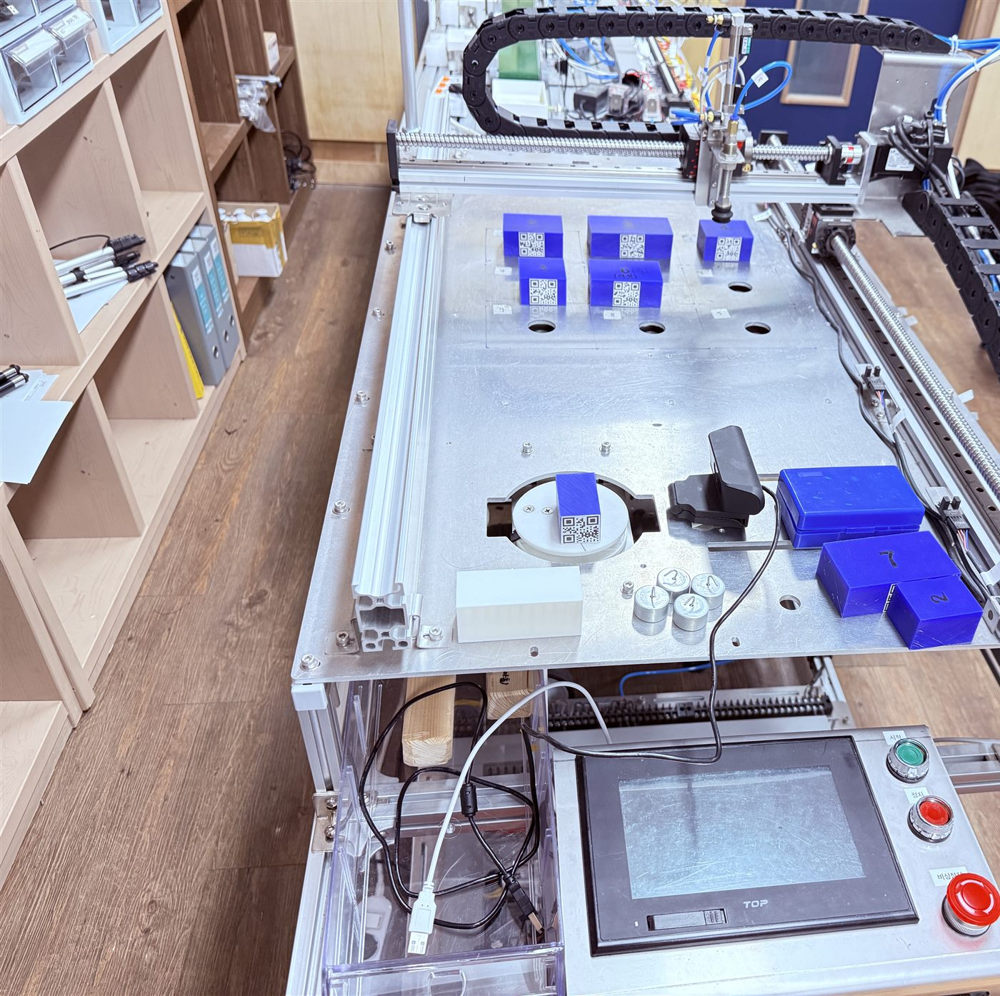

I build industrial automation cells end to end: PLC ladder logic and motion control, HMI and SCADA screens, and the Python vision and robot code that ties them together. My projects include a cell that sorts parts by weight using a PLC-driven gantry, a 6-axis robot arm and a 3D depth camera, a conveyor line that sorts parts by length, and a 6-floor elevator controlled by a PLC and an HMI.
A working sorting cell that picks blocks, weighs each one on a load cell and places it into one of nine positions in weight order. A 2-axis servo gantry with a pneumatic gripper does the sorting under PLC control. On top of that, a 3D camera finds blocks on the table and a 6-axis robot arm feeds them to the load cell, waiting for the PLC's weight reading before it starts the next pick.
How the parts talk to each other. The dashed link is the weight reading the PLC sends back to the Python program.

Ladder program in six parts: basic operation, coordinate setup, auto run, manual jog, errors and lamps. Step registers drive homing, pick and place, and sorting. A 9-slot weight table is reordered by swapping entries.
XG5000 · XGB · positioning · load-cell moduleFinds blue blocks by colour and depth. Fits the table plane, then gets each block's centre, size and rotation. Sends the Mirobot raw G-code over USB serial, with no vendor library.
Python 3.12 · pyrealsense2 · OpenCV · pyserialA desktop app with face-recognition sign-in, Admin and Operator roles, English and Korean screens, calibration tools, a run log and a live 3D view of the robot.
Tkinter · OpenCV YuNet + SFaceAn HMI panel for the sorter, a CIMON SCADA tag set covering two production lines, and browser-based 3D simulators of the machine packaged as Windows apps.
TOP Design Studio · CIMON 3.91 · Three.js · PyInstallerA 3D model of the sorting machine and the Mirobot arm, built with Three.js from the machine's CAD mesh and the official Mirobot model. Drag to turn the view and scroll to zoom. It runs a full sorting cycle on screen, so anyone can see how the machine works without the hardware. The first load takes a few seconds because the model is about 15 MB.
The operator app we wrote in Python to run the vision, weighing and robot cell from one window. It links the D455 camera, the PLC load cell (over RS-485) and the WLKATA Mirobot, and shows a live 3D view of the robot.
| Screen | What it does |
|---|---|
| Face login | Webcam sign-in with OpenCV face recognition. A person is logged in after 5 matching frames, and the app locks itself after 10 minutes without use. |
| Dashboard | Live camera view, 3D robot simulator, machine state, load cell weight, session counts and the START / STOP / AUTO controls. |
| Learning | Pick height learned per stack layer. A good pick moves the next one 1 mm higher, a miss 3 mm lower, within set limits. |
| Calibration | One-click automatic camera-to-robot calibration. The result is rejected if the error is over 15 mm. Admin only. |
| Users | Add, re-scan or delete face IDs with Admin or Operator roles. The face model retrains itself after every change. |
| Log | Machine log and access log. |
With the real robot, the 3D arm follows the joint angles read from every status reply. In dry-run mode every robot command is turned into joint angles and animated, so a whole run can be checked without moving the robot.
Python · NumPy · robot kinematicsEach block is picked at its own height: 12.0 + 1.05 × the height the camera measures. The rule was fitted to heights taught in WLKATA Studio and checked on the real robot.
Depth camera · fitted modelOne button switches the whole app between English and Korean, and the choice is remembered. A status bar shows lights for the robot, camera, PLC and face model.
Tkinter · i18n| Component | Model | Role |
|---|---|---|
| PLC | LS Electric XGB XBM-DN32H2 | Sequencing, motion, weighing |
| Robot arm | WLKATA Mirobot (6-axis) | Picks blocks and places them on the load cell |
| 3D camera | Intel RealSense D455 | Finds blocks and their position |
| Gantry | 2-axis servo, pneumatic gripper | Moves blocks into the 9 sorted slots |
| Weighing | Load cell + PLC input module | Weight with zero, span and 2-point calibration |
| Links | USB serial · RS-485 · Ethernet | Robot · PLC to PC · PLC to HMI and SCADA |
Two conveyors carry 3D-printed blocks past a row of three sensors that measure each block's length. Pneumatic cylinders then push each block into the right bin for small, medium or large. The line runs from a touchscreen HMI. Optionally, a camera and robot arm can load the blocks onto the belt.
Built from the line's STEP assembly. It runs the PLC logic with the team's real variable names: length measuring, FIFO tracking, the RUN / DRAIN / FAULT / RESET states and the alarm words. The fault-injection panel lets you break a sensor or jam a cylinder to watch the error system respond. Open full screen ↗
When a block is measured, its expected arrival time at the bin is queued (FIFO), based on a 32-bit running time count. Several blocks can be on the belt at once, and no tracking hardware was bought. A block is pushed only when the arrival sensor and the queue agree.
FIFO queue · 32-bit timer · zone handoffThe sensor reading changed while a block was leaving the sensors, so it went to the wrong bin. The fix holds the size result until the block has fully passed. The arrival sensor flickered, so it now has an on-delay filter.
Latch · on-delay filter · edge detectionA normal stop runs the belt until it is empty. An emergency stop cuts all outputs at once. To restart, the line steps from Reset (clear data, return cylinders) to Safe to Idle, so nothing moves suddenly.
Drain mode · E-stop · interlocksAlarms are bit-mapped by zone and split into guide messages, light alarms (the line waits) and heavy alarms (the line stops). A broken upstream sensor is found from an empty handoff buffer, not from an extra sensor.
Bit-mapped alarms · HMI guidanceDelivered with a wiring and pneumatic circuit diagram, flowchart, parts list, I/O list, error list, parameter list and a user and maintenance manual.
A working 6-floor elevator model. An AC motor with a speed controller moves the car, a pneumatic cylinder acts as the door, and a sensor on every floor reads a flag on the car. Each floor has hall call buttons (Up only at floor 1, Down only at floor 6). Inside the car, the floor buttons, the direction arrows and the door open/close buttons are on a touchscreen HMI.
Split into six programs, one per job: switch input, floor sensing, direction, floor request, arrival and motor drive. Sensor states become position values in D00000, and the target goes in D00001. Comparing the two decides whether the car goes up or down. Timers handle the door after the car arrives.
XG5000 ladder · counters · timersThe car stops only at floors called in its direction of travel and ignores calls for floors it has already passed. The door stays shut while the car is moving. An emergency stop halts everything, and the car runs again after the stop is released.
Call priority · door interlock · E-stopThe operator screen was built in TOP Design Studio, with a car status view, direction arrows, floor buttons and door controls. The team also wrote a user manual, a control flowchart, a parts list and a test report.
TOP Design Studio · user manual · test reportPassed all 9 requirements and 9 of the 10 functional tests. The one marginal result was speed control: the motor speed setting is safe up to level 3 (limit 3.5). From level 4, the car's inertia carries it past the floor, so that range was written into the test report.